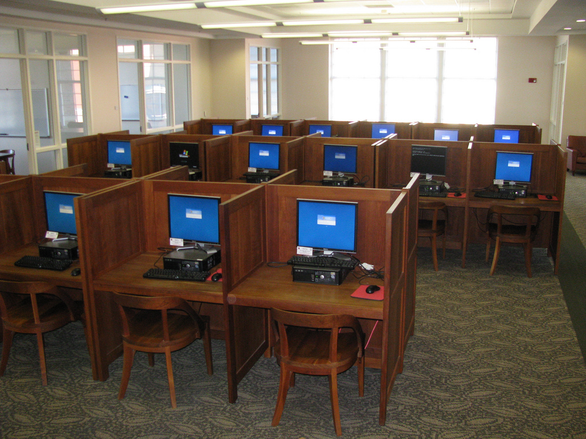
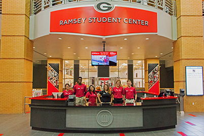
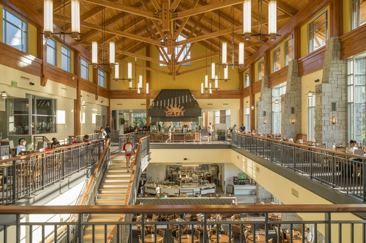

The Miller Learning Center or commonly referred to as the MLC by students is a spot where a lot of students enjoy studying and getting work done. Located beside the Tate student center and Bolton, the MLC is in a great location. With four floors equipped with collaborative study rooms and desks, the MLC is the perfect spot to get some work done in a quiet environment. If you need complete silence, check out the Reading Room which is located on the third floor on the east wing.

The Ramsey center is the main gym on the campus. Ramsey is located off the main campus near East Campus Village (ECV). Ramsey is a great place to go to if you need to exercise, to take a study break, or to meet up with some friends and get a great workout. In addition, Ramsey has something for everybody including small group classes, a rock climbing wall, swimming pool, racquet ball courts, indoor track, machines, free weights, and basketball courts. There is really something for everyone, and a perk of being a full time UGA student is that a Ramsey gym membership is FREE!
Fall Semester= UGA Football season! Make sure to keep those Saturdays free because Saturdays are to students some of the “best days of the year”. Break out your red, black, and white attire because Saturdays are for the dogs. Take advantage of your student section tickets, they are a great deal and fun. Saturdays are for the dawgs, but make sure to dress your best, college football games in the south are different from your average high school football game. It is expected to wear either white, red, or black at home games. It is NEVER a dull Saturday in Athens!!!

Eating a healthy, balanced meal is so important as a college student. Eating right keeps you energized and ready for a full week of classes and activities. There are many dining halls available around campus with yummy food options. The dining halls have really great food at UGA, and a perk to UGA’s dining halls is that they are open continuously throughout the whole day, unlike other universities which have specific meal time hours. An added bonus is that UGA has dining hall that is open 24 hours from Monday-Thursday, Snelling dining commons! As a UGA student be sure to “snellibrate” once with some waffles at 1 am!